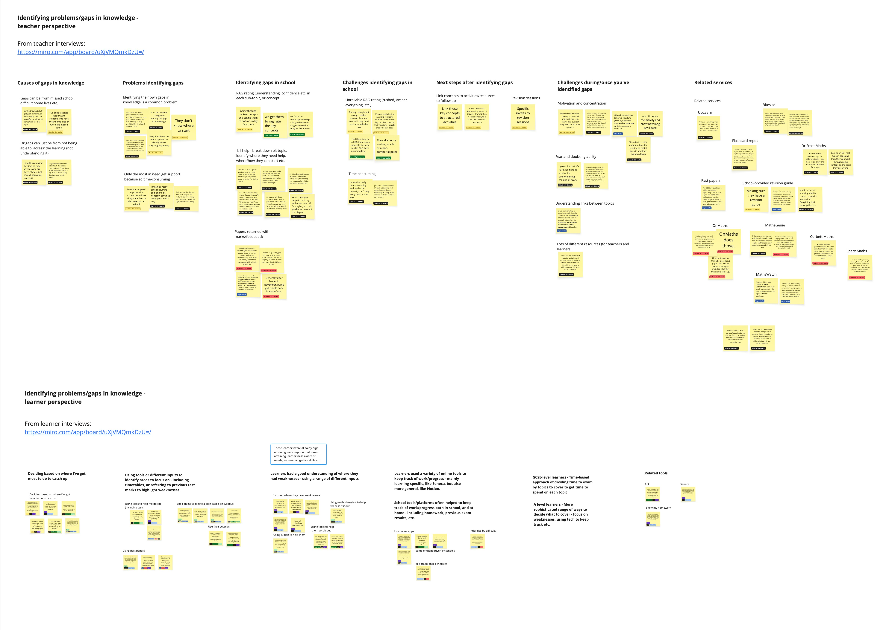
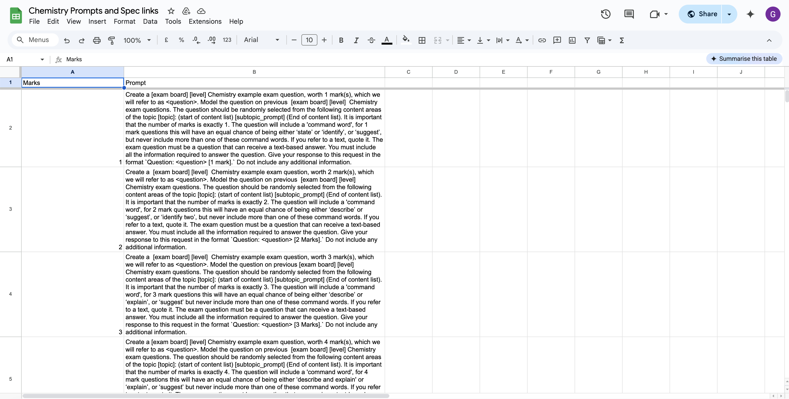
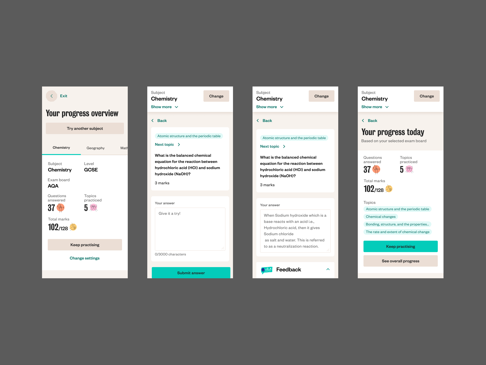
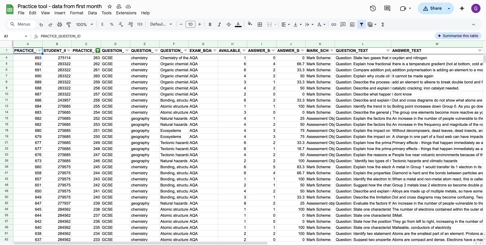
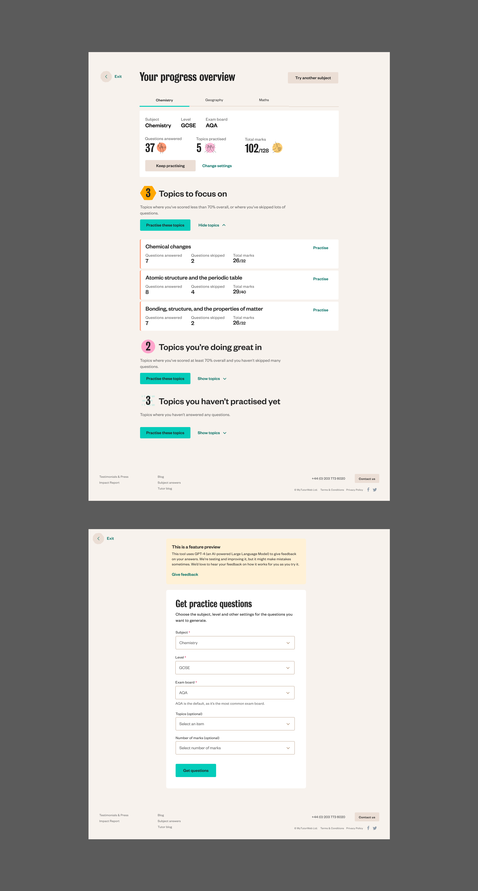

EdtechB2CResponsive WebGenerative AIProduct
MyTutor —
What I did
Design for Generative AI
Mobile design
Interface design
Prototyping
User interviews
User testing
Team
I led research and design, with PM and engineering colleagues, and teaching specialists.
Context
We’d heard from our previous research with learners that identifying where to focus when studying was often hard, and getting feedback from teachers on your progress could take a long time.
We’d also identified ways we could use generative AI to provide support to learners outside of live tutoring sessions, by providing questions and structured feedback to their answers. We’d built a rough prototype of a tool that generated questions for a certain syllabus, and marked the answer you gave to the question.
Outcome
We delivered a self-guided study tool that diversified MyTutors services from purely ‘live’ interventions to the start of a wider product proposition.
Learners could get an unlimited number of practice questions, tailored to their exam boards, specific topic areas, and number of marks, and get immediate constructive feedback to their answers, tracking their progress through each syllabus over time.

As part of our discovery into learners' needs and how we could support them better, I led interviews with a range of school-aged children to find out more about various aspects of their education, focused on self-guided studying. One of the themes we identified in this research was the range of challenges students have in knowing where they struggle, and how to improve in a targeted way.

We worked with tutors who specialised in Chemistry, to write suitable prompts to generate questions, and provide detailed feedback.

We assumed that mobile would be the device type that most learners used, but from our research with learners we learnt that this wasn’t the case, with lots of students preferring to use a laptop or desktop to avoid the potential for distraction that their mobiles presented.

Testing & iterating
Some of the issues we uncovered when learners began using the tool included very similar questions being generated in succession, questions using the wrong command word (define, explain, analyse, suggest etc.), and questions being framed as multiple choice. We also noticed some changes in the tone of the responses giving feedback. We worked with our tutor consultants to improve the command word accuracy, and we also made prompts more detailed to refine the responses learners got to their answers.

One of our later experiments involved tracking the feedback and marks that learners received over time, to enable them to understand their progress, and know where to focus next. This included breaking down the syllabus for the relevant subject and exam boards, and highlighting where students were doing well, and where they needed more support.